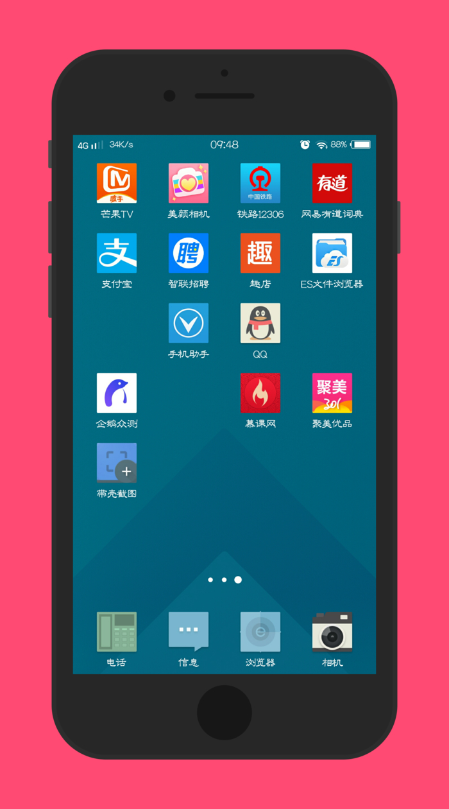
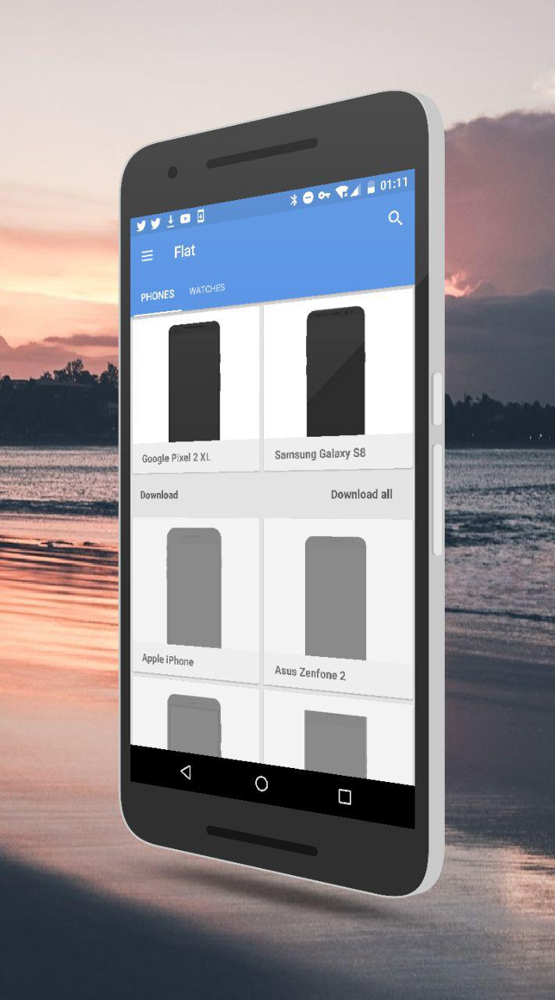

Screener 对比评测：手机截图包装工具里，这款 Web 端方案凭什么站稳一席之地
截图成品图做过七八种工具之后回头看，Screener 在边框库丰富度、实时渲染和自动配色上确实有自己的一套——它未必适合所有人，但如果你追求零安装、流水线式出图，值得单独拎出来说说。
定位：截图包装工具这条赛道，它在什么位置
给手机截图套个壳、加个背景、出一张能直接丢到应用商店或社交媒体的成品图，这条小赛道这些年挤进来的工具真不少：有的是桌面端独立软件，有的是浏览器里的在线生成器，还有的做成了 Android 应用直接在手机上就地加工。大厂方案往往绑在自己的设计生态里（比如 Sketch 和 Figma 的 Mockup 插件），系统自带的又只能算半成品——够规整但完全没质感。
想去试试的直接打开Screener官网就行——它走的是「Web 端 + 轻量流水线」路线。它不靠丰富的模板吸引用户，也不追求 Photoshop 级别的自由度，而是把一张截图从素稿到成品的加工过程拆成清晰的六步：选边框、放截图、调眩光、加投影、铺背景、输出。每一步都有独立的控制面板，改完立刻能看到效果，这在同类工具里属于思路比较干净的那一类。
它的差异化：三个别家不太好做到的点
用了大半年，觉得 Screener 真正立得住的优势有三个，刚好是从样本文档里能摸到的那些细节。
边框库真的够用，而且按需下载
不少在线生成器的边框是写死的——站点预置了十几款机型，你要的恰好没有就得换个工具。Screener 不一样，它的边框库是按 Flat / 3D / Minimal 三种风格分类，每种下面挂着一堆机型，而且支持按需下载：点开某款边框的时候，如果本地没缓存，应用会先拉取再渲染，不用一次性把几十 MB 的资源全拖下来。
这点听起来是小事，但用过就知道差别在哪。我是做 App 宣传物料的，经常需要拿不同机型的截图凑一整套图——有时候是 iPhone 各代，有时候是 Samsung Galaxy 产品线，偶尔还要掺个智能手表壳。以前用别的工具，要么遇到某款机型缺失就得手动切图，要么为了一个边框下载了一个完整的几百 MB 的安装包。Screener 打开抽屉菜单、选样式分类、点机型，三步就进编辑窗，没遇到过「这款没有」的尴尬。
纯色背景自动配色，这个小细节很省时间
样本文档里提到的「Custom background colors」功能，用久了发现它不只是换个颜色那么简单。最省心的用法是：懒得调色的时候，随便选一个平色，应用会读取截图里的主色自动配一个和谐的背景。比如你放的截图是蓝色系的应用界面，它给你出来的背景色会自然偏冷调，不会像你自己瞎选那样撞色。

这个功能在同类工具里不算标配——大多数要么只给你一个颜色选择器让你自己挑，要么干脆只有图片背景。展示应用界面的时候，自动配色这一步省下的时间不算多，但出图的一致性明显好于手动挑的。
加工流水线清晰，每一步改动能立刻看到
Screener 的界面逻辑是「编辑窗中间预览、底部一排工具栏」，从左到右依次是眩光、投影、前进按钮、右上角输出菜单。截图放进去之后，你可以按顺序一步步调：先给屏幕打一层眩光增加质感，再给机身加投影让它从背景里「浮」出来，最后铺背景——图片、纯色、虚化三选一。
关键是实时渲染。改眩光强度、调投影方向、切背景图，画布立刻刷新，不用等几秒或者点个「预览」按钮。我对比过几家在线生成器，有的是改完得手动触发渲染，有的是改完还得重新导出才看得到效果，用起来像在操作老式 CAD 软件。Screener 这一点做得很像原生应用的手感。

它的取舍：为这些优势付出了什么
优势不是天上掉下来的，总得有取舍。Screener 的几个硬限制，在样本文档里其实都直接或间接提到了，用之前最好先有预期。
模糊只对图片背景生效，纯色背景不行。 这个点容易踩坑——很多用户在纯色背景上找模糊按钮找不到，以为是 bug。Screener文档里专门解释过：虚化是对照片像素做柔化处理，纯色没有可柔化的内容。如果你想要纯色背景上也有那种「背景退后」的高级感，要么选一张纯色照片当图片背景再模糊，要么用低饱和的浅色系近似这种观感。
边框需要提前下载才能用。 虽然是按需下载，但第一次点某款边框的时候确实要等一下——从几百 KB 到几 MB 不等，取决于边框复杂度。如果你在网络不好的环境里用，可能得提前把常用的几款都点开一次缓存好，不然临时换边框会卡。
平台覆盖有限。 目前主要是 Web 端，另外有 Android 应用版，官方下载页有各渠道的安装包。桌面端独立软件没有，iOS 端也没做——如果你是 Mac 或 Windows 用户，只能用浏览器版，虽然浏览器版功能不缩水，但总归不像原生应用那样可以快捷键全键盘操作。
选购结论：什么样的人选它，什么样的人选别的
如果你满足下面几个条件，Screener 值得用：
- 零安装刚需：不想在电脑上装一堆独立软件，浏览器打开就能出图；
- 经常换机型边框：一次要出好几款机型的成品图，边框库丰富度和按需下载是刚需；
- 追求流水线效率：改完能立刻看到效果，不想每调一个参数就点一次预览或导出。
如果你更看重以下几点，可能得看看别的工具：
- 桌面端深度操作：需要快捷键批量处理、支持拖拽导入大量截图，那桌面版独立软件更顺手；
- 极致模板自由度：想从空白画布开始自己画边框、自己定义光影参数，大厂的设计生态插件（比如 Figma Mockup）给的自由度更大；
- iOS 原生体验：目前没有 iOS 端，iPhone 用户只能用浏览器。
我的推荐很明确：Web 端做截图包装的工具里，Screener 是少数把「够用的边框库 + 实时渲染 + 省心的小细节」三件事同时做扎实的。它不一定是功能最强的，但在它瞄准的场景下，确实是我用过出图最顺手的一个。如果你刚好需要一套不折腾的方案，打开浏览器试试——大概率不会踩坑。文档本身也在三个平台做了镜像备份——GitHub、Gitee、GitCode 上都能找到对应的分类目录，访问哪个方便就看哪个。